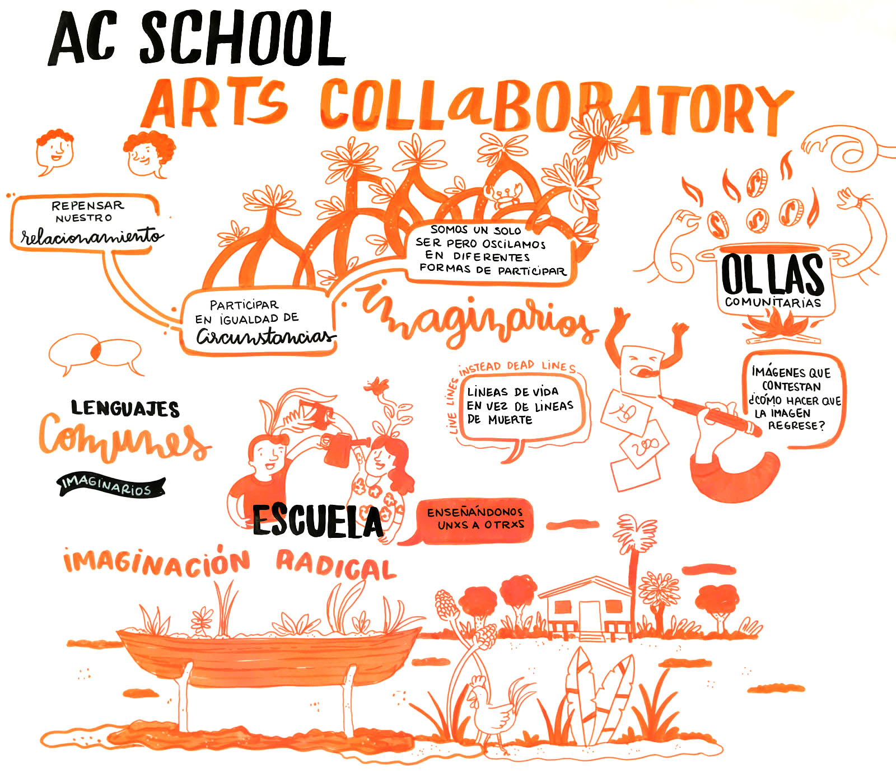
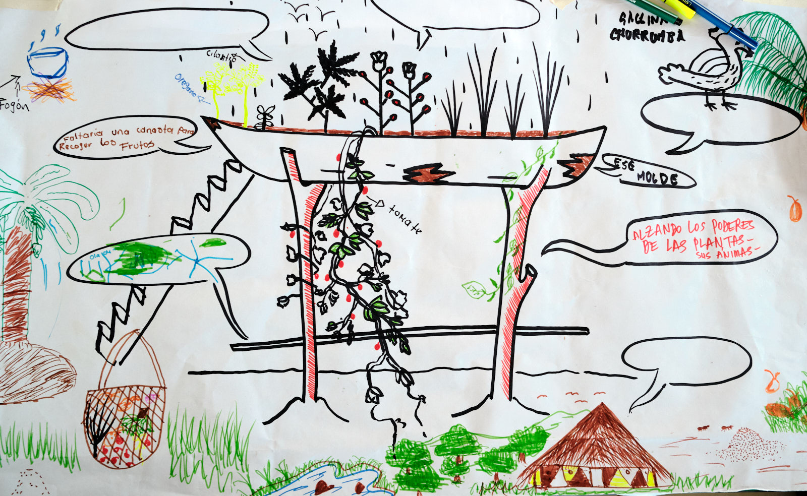
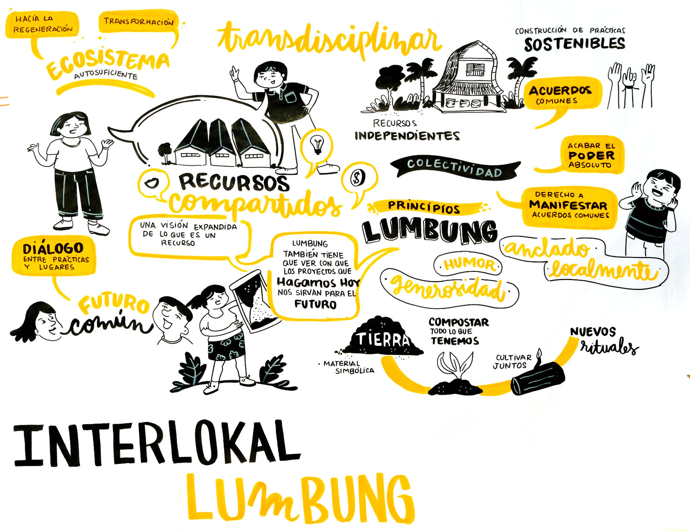
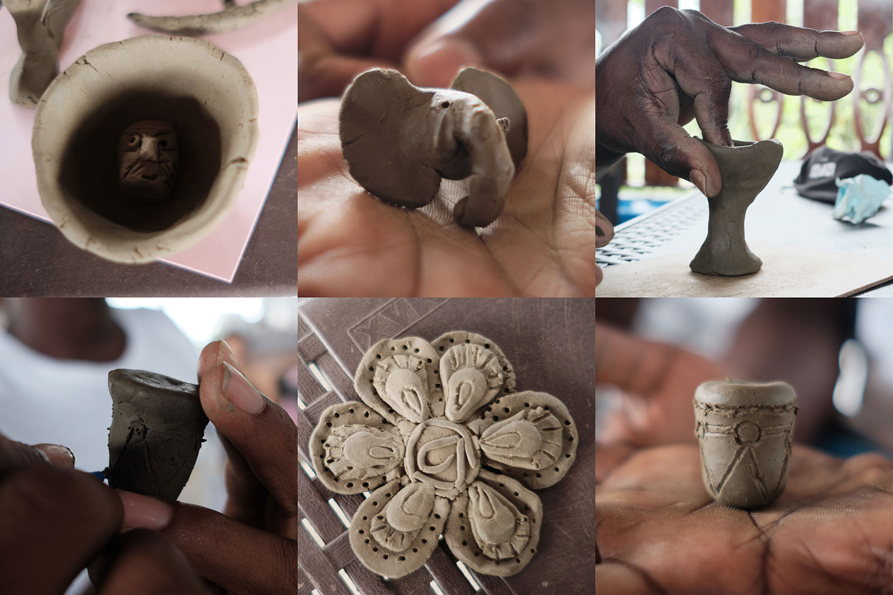
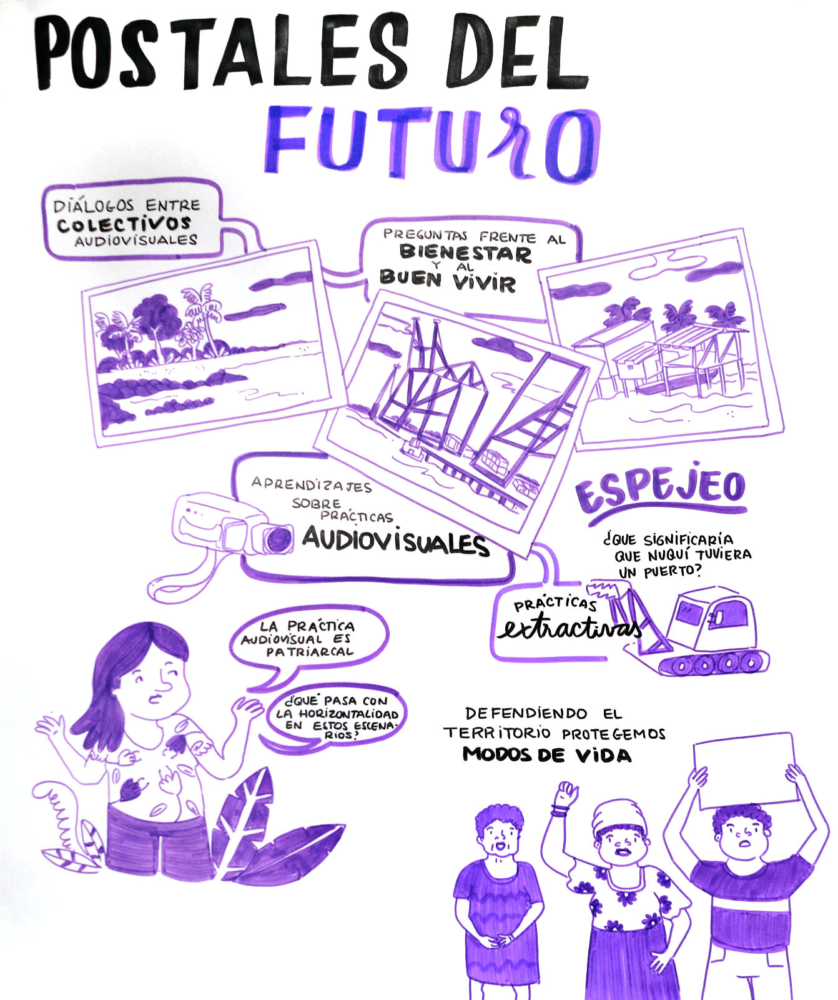
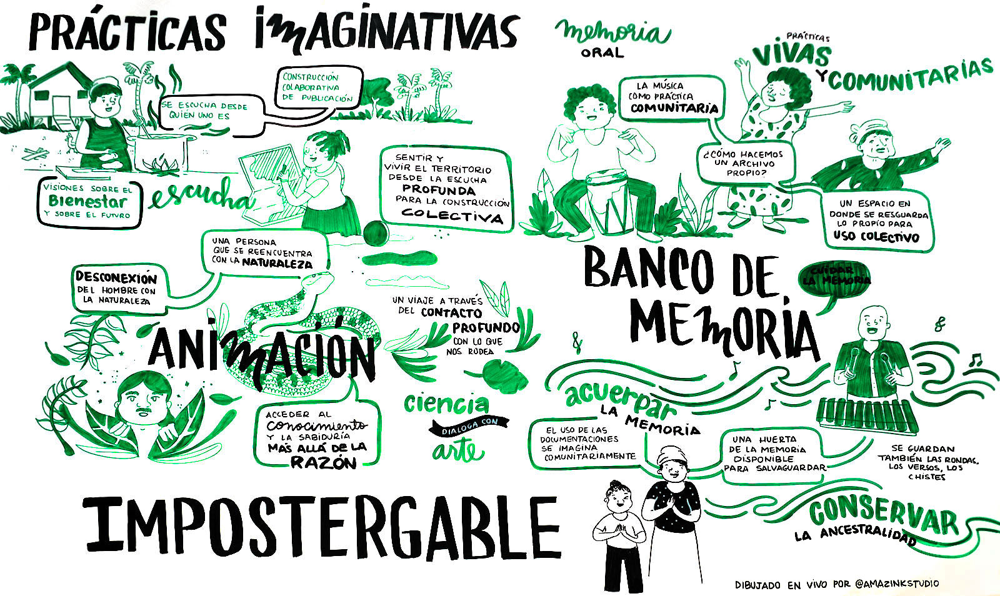

Día 3 //
La red se construye des-haciendo
El enmarañamiento traspasa fronteras geográficas, tiende puentes entre las diversidades y las diferencias; propicia encuentros y desencuentros; da lugar al conspire pero también al disenso.
La juntanza de las organizaciones e individualidades en la tercera jornada del Lumbung Nuquí lo podríamos resumir como el descascaramiento de los problemas estructurales que en cada territorio viven las comunidades afro, indígenas, mestizas, étnicas, campesinas, de mujeres, de trabajadores y trabajadoras en el sur global. Estos problemas frecuentemente hacen nido en nuestrxs cuerpxs y se naturaliza en nuestro cotidiano un entramado de ideas, palabras o acciones de discriminación, donde opera el extractivismo, el machismo, el clasismo, despojo cultural, consumo desaforado, entre otros.
¿Por qué surgen actos violentos y opresivos que descomponen nuestras redes de afectos y cuidados? ¿Cómo abordar estas situaciones dentro de organizaciones sociales, políticas, artísticas y culturales de base? ¿Cómo autogestionar el conflicto?
Tener conversaciones incómodas y permitir que las tensiones se expresen, es darnos la oportunidad de reflexionar colectivamente. Quizás no lleguemos al consenso, pero posiblemente hallemos, en la contradicción, la otredad no separadora sino complementaria. Las diferencias a nuestro servicio, son la base fundacional de lugares políticos localizados, territorializados, transculturales e históricos. Son, también y sin duda, la puerta a la autoobservación, a la revisión de los propios privilegios y, por qué no, a la renuncia de los mismos cuando han sido mecanismos de opresión sobre otres seres humanos y no humanos.
A quienes leen con atención, les invitamos a cuestionarse: ¿En qué espacios he sido opresor/a, en qué espacios oprimido/a?, ¿dónde me ubico actualmente dentro de las luchas que he dado?, ¿cómo estoy dirigiendo mi energía hacia un alto propósito más allá de mi propio bienestar? Comprendernos como un constructo histórico de desigualdades, reconocer nuestra herencia colonial, dinamizante del despojo, del capitalismo salvaje, de la desconexión con la naturaleza. Luego, ¿qué acciones puedo realizar para fortalecer los vínculos sin desintegrarme ni perder identidad?

AC School / Art Collaboratory
La Plataforma Arts Collaboratory creada en 2007 por tres fundaciones holandesas (Hivos, DOEN, Mondrian), ha fortalecido a 25 organizaciones del Sur Global (África, Asia, América Latina y Medio Oriente). Se ha posicionado desde el quiebre de prácticas poscoloniales y neoliberales, para apostar a relaciones horizontales y micropolíticas transformadoras de las organizaciones y sus modelos de liderazgo. Las asambleas presenciales han abierto espacios de conversación para cuestionar los paradigmas de financiación del arte y las dinámicas de relacionamiento entre financiadorxs y organizaciones.

Las organizaciones Lugar a Dudas de Cali y Cráter Invertido de México nos hablaron desde sus experiencias de trabajo, guiados por los principios de la solidaridad, los afectos, la creación, la autogobernanza y el trabajo en colectividad. Sus relatos nos invitaron a reflexionar sobre la imaginación radical, una apuesta creativa y colaborativa entre las comunidades. Sus trabajos desde las particularidades les une por objetivos comunes, por modos de economías comunitarias y solidarias y la lucha por la autonomía de sus territorios, así como practicar la olla común, la minga, la cosecha y el imaginario colectivo.
“El encuentro dichoso con el fracaso es un punto de partida”.
–Sally Mizrachi (Lugar a Dudas)

Hacer crecer la felicidad, cultivarla
Interlokal Lumbung y Ruangrupa
Desde Indonesia, los y las compas de Ruangrupa y Jatiwangi Arts Factory, pertenecientes al proyecto Interlokal Lumbung, trajeron su tierra en los equipajes de viaje hasta Nuquí. La tierra representa a sus familias y los lazos afectivos, la confianza, la comunidad. Lumbung es una forma de organización comunitaria.
Agarramos la tierra húmeda y arcillosa proveniente de Indonesia, creamos figuritas de tambores, animales, vasijas, astros y flores, mientras tanto nos nutrimos de los encuentros artísticos, festivales, talleres y laboratorios que han hecho en el Interlokal Lumbung, reuniendo una gran variedad de expresiones culturales, así como disciplinas del saber científico, saberes tradicionales e iniciativas juveniles.
Con ellxs comprendimos la importancia de crear espacios abiertos para la difusión del conocimiento y sistemas de apoyo integrado; aprendimos que para hackear el sistema hay que estar adentro mientras nos conocemos y desarrollamos la capacidad de crear nuestros propios acuerdos y cumplirnos.


Postales del futuro
Este proyecto de colectividades de creación audiovisual y de comunicación, se fundamenta en el diálogo y la hermanación de procesos entre Buenaventura y Nuquí. Estos semilleros de intercambio han unificado y puesto en colaboración a Más Arte Más Acción con procesos barriales como Tura Hip-Hop, Puerto Creativo, Yemayá Producciones, En Puja.
Postales del Futuro es la creación de 6 postales o películas documentales que responden preguntas respecto al bienestar y al buen vivir, así como a la horizontalidad de los escenarios audiovisuales en Colombia. Las postales documentan audiovisualmente distintas problemáticas que aquejan a estos grupos de jóvenes en constantes situaciones de racialización y violencias estructurales. Uno de los cortos documentales es “Tribugá” (Dirección de Aida Leidis Palacios, David Palacios) en el cual es posible comprender y conocer el caso de desplazamiento forzoso y las matanzas del pueblo de Tribugá en Nuquí. Situaciones que intentaron crear el caldo de cultivo para la construcción del Puerto de Tribugá, al que hoy muchísimas personas locales y aliadas se han opuesto.
Otro de los temas de las postales que se conecta con lo anterior, es el análisis de las prácticas extractivistas desde el Puerto de Buenaventura, la crítica a la productividad versus el trabajo manual, el ritmo y el afán desenfrenado de la vida capitalista, con “Silencio” (Dirección: Brandon Giuseppe Rentería).
“Alabadas” (Dirección: Nicolás Ángel) es otra postal documental que narra la resistencia del pueblo de Nuquí a partir de una serie de mujeres que habitan este poblado, así como el asesinato a líderes sociales en Colombia defensores de derechos humanos y territoriales.
Proyecto Impostergable
Narrativas sobre la biodiversidad
Las historias se mezclan para convertirse en imágenes poéticas, nos hablan desde la memoria y la lucha contra el olvido. La animación es un camino más para transitar los territorios aseguraron Fernando Arias, Tahuanty Jacanamijoy y Henry González.
Águeda fue una mujer nuquiceña que luchó contra el olvido. Luego se convirtió en la serpiente que guía el viaje ancestral de un hombre de ciudad quien redescubre la naturaleza en la espesa selva de Nuquí.
Este trabajo nos invitó a reflexionar sobre la reconexión con la naturaleza, entender el lenguaje enigmático de la selva y nuestros lugares de enunciación en los territorios. La importancia de rememorar en formatos con el poder para transmitir sensaciones y experiencias difíciles de verbalizar. Una imagen se relaciona con diversidad de mensajes.
En este proceso de Lumbung, sentamos la base de un propósito por reparar y continuar la lucha contra el olvido de todas las mujeres negras y sus familias que han sido desplazadas de su tierra en el Pacífico colombiano.
Inició con la experiencia del colectivo cráter invertido desde México. Como parte de prácticas imaginativas, lxs compañeros nos hacen una invitación a la escucha sobre las múltiples propuestas y visiones del bienestar y el futuro las azoteas fueron esa imagen poética sobre la diáspora africana que recicla el chingo (medio de transporte) elevándola para sembrar yerbas aromáticas, medicinales y de condimentos, entre dibujos y cuentos se produjo un afiche. Fue un espacio que aportó a pensarse la producción artística y editorial como una herramienta de diálogo intergeneracional, crítico y de intercambio de saberes basado en el respeto y la creatividad.

Proyecto Impostergable
Banco de Memoria: Música, memoria y comunidad
Este proyecto enmaraña al grupo musical Tambacúm, a la Corporación Pacífico Mujer, a Sonidos Enraizados y al señor Fausto del Corregimiento de Coquí, quienes unen fuerzas para crear un banco de memorias sonoras, y documentar formatos de composición y de interpretación de las músicas tradicionales del municipio Nuquí.
En un ejercicio de memoria, la señora Cándida como mayora sabedora de su comunidad, transmite las prácticas orales de sus ancestrxs y es el grupo jóven de Tambacúm quienes se reciben ese relevo generacional para aprender e interpretar las sonoridades tradicionales de su tierra.
En ese ejercicio, Sonidos Enraizados se une para desarrollar el proceso de producción y grabación sonora de estas prácticas de cultura viva comunitaria, bajo una iniciativa de escucha de los deseos profundos de quienes buscan revivir las músicas y tradiciones orales nuquiseñas, realizan el ejercicio de mapear, recoger y compartir estas músicas en otros espacios a través de ejercicios de circulación.
“Lo que queremos es conservar. Que los hijos y los hijos de nuestros hijos sepan lo que hacían nuestros ancestros. Me enorgullece mucho el proceso que se hace, es muy importante que nuestra cultura, nuestras tradiciones, nuestros cantos y bailes no se pierdan”.
–Cándida García